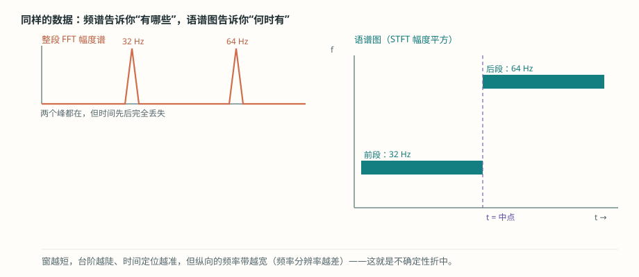
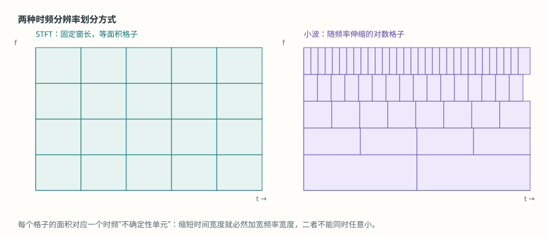
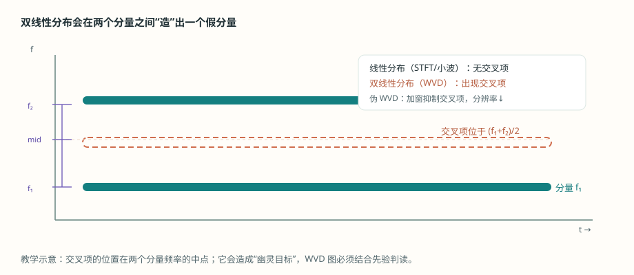

Signal · System · Insight / 18
时频分析：STFT、小波与 Wigner-Ville
当频率成分随时间变化，单看频谱会丢失时间；把一维信号映射到时频平面，并接受随之而来的分辨率折中。
FFT 为什么看不到“什么时候”？
FFT（及其背后的 DFT）在整段观测窗口上对信号做积分，隐含假设是信号在整个窗口内平稳：频率成分不随时间变化。但很多真实信号是非平稳的——语音的音节在快速变化，雷达回波的频率随时间漂移，机械振动里会出现短智的冲击。对这些信号，频谱回答的是“有哪些频率”，而不是“什么时候出现”。
原因很直接：一个只持续很短时间的频率分量，在整段 DFT 里被均摊到整个观测时长上。它的能量仍然会出现在对应频点，但时间信息已经被积分掉。一个具体可检验的例子里，信号前半段是 32 Hz、后半段是 64 Hz；整段 DFT 在两个频点都出现峰，却无法说明先后。

时频分析的目标就是把一维信号 x[n] 映射到二维的时频平面 (t, f) 上，使得我们能同时读出“什么时间”与“什么频率”。本页介绍三类做法：线性加窗的 STFT、变分辨率的小波变换、双线性的 Wigner-Ville 分布。
STFT：加窗切片与不确定性折中
最直观的思路是：既然整段 FFT 要求平稳，就把信号切成短帧，假定每帧内部平稳，对每帧做 FFT。这就是短时傅里叶变换（STFT）。离散形式下，帧长 L、帧移 H、窗 w[n]：
式（1）：m 是帧索引，k 是频率索引；频率网格间距为 f_s/L，帧移 H 决定时间采样间隔。
STFT 面临一个不可回避的折中：时间分辨率与频率分辨率不能同时任意小。用均方根宽度衡量的时间宽度 Δt 与频率宽度 Δf 满足：
式（2）：f 以 Hz 计；这是均方根宽度的下界（高斯窗取等号），常称为 Gabor 极限。
语谱图：把 STFT 画成二维图
把 STFT 的幅度平方 |X[m,k]|² 以颜色深浅画在时频平面上，就是语谱图（spectrogram）：横轴时间、纵轴频率、颜色代表能量。语音的元音在这种图上表现为几条水平亮带（谐振峰的共振峰），而摩擦音等宽带噪声则表现为垂直或弥散的亮区。
社区常用的一类实现是 SciPy 的 scipy.signal.stft / spectrogram。下面是最小用法；具体窗、帧长与重叠参数需要根据信号自行选定，没有普适最佳值。
from scipy import signal
fs = 16000
nperseg = int(0.025 * fs) # 25 ms 帧长
noverlap = nperseg - int(0.010 * fs) # 10 ms 帧移
f, t, Zxx = signal.stft(x, fs, window="hann",
nperseg=nperseg, noverlap=noverlap)
spec_db = 20 * np.log10(np.abs(Zxx) + 1e-12)参数选择的前提是应用场景。语音常用 20～30 ms 帧长与一半重叠；需要分辨低频音符时可能需要更长的帧，代价是时间定位变粗。窗函数（Hann、Hamming 等）主要影响旁泄与主瓣宽度，而不是“提高分辨率”。
小波：让窗口随频率伸缩
STFT 的窗长是固定的，因此对高频与低频采用同样的时间/频率分辨率。物理信号则常常希望相反：低频用宽的时间窗换取好的频率分辨率，高频用窄的时间窗换取精准的时间定位。小波变换通过对一个母小波做伸缩和平移得到一组基，实现了这种可变分辨率。连续小波变换定义为：
式（3）：尺度 a 控制伸缩（a 大对应低频），平移 b 控制时间位置。
CWT 在连续参数 (a,b) 上变化，过完备但计算量大。工程上更常用离散小波变换（DWT）：把尺度与平移离散为 2 的幂次，用一对镜像滤波器组（低通 h₀、高通 h₁）逐级分解——低通支路下采样得到“近似”系数，高通支路得到“细节”系数，下一级只对近似支路继续分解。这就是 Mallat 多分辨率分析。

| 特性 | STFT / 语谱图 | CWT | DWT |
|---|---|---|---|
| 时间分辨率 | 固定 | 高频好、低频差 | 高频好、低频差 |
| 频率分辨率 | 固定 | 低频好、高频差 | 低频好、高频差 |
| 计算效率 | 高（基于 FFT） | 低 | 高（滤波器组，O(N)） |
| 可重建 | ISTFT 可重建 | 存在但较复杂 | 滤波器组对称时完美重建 |
Wigner-Ville：高分辨率与交叉项
STFT 与小波都属于线性时频表示：信号相加，表示也相加，因此不会产生虚假分量，但分辨率受不确定性折中限制。若允许放弃线性，双线性时频分布（Cohen 类）能给出更高的分辨率。最著名的代表是 Wigner-Ville 分布（WVD）：
式（4）：核是 x·x*，所以是信号的双线性函数（二次型）。
WVD 的吸引力在于：对单个线性调频（chirp）信号，它在时频平面上是一条无限锐的直线，时频集中度可达不确定性下界；它又满足边缘性质（对频率积分得到瞬时功率）。但双线性结构也带来代价：当信号含多个分量时，分量两两之间会产生交叉项。两个频率 f₁、f₂ 的正弦会在中点 (f₁+f₂)/2 处生成一个虚假的亮带。

抑制交叉项的常用办法是加窗：在时域与频域分别平滑，得到伪 WVD（PWVD）或平滑 WVD（SPWVD）。代价是时频集中度下降——又一次落回“没有免费午餐”：没有任何一种时频分布能在所有指标上同时最优。
交互：窗长与时间定位
下面的实验使用与 FIGURE 01 相同的信号（前半段 24 Hz、后半段 60 Hz，采样率 192 Hz）。滑块改变 STFT 窗长 L，帧移取 L/2；热图横轴为时间、纵轴为频率。缩短窗长会让台阶变陡、时间定位变准，但纵向的频率带变宽；加长窗长则相反。
动手验证：选择窗长 L
频率分辨率约为 f_s/L，时间分辨率约为帧移的时长。当 JS 关闭时，FIGURE 01 与式（1）（2）仍可独立理解。
# 逐帧加窗 + FFT（完整可运行版见 examples/18_timefreq.py）
for m in range(0, N - L + 1, hop):
seg = [x[m + n] * w[n] for n in range(L)]
spec = dft_mag(seg)[:L // 2 + 1] # 单边幅度谱完整可执行例程（18_timefreq.py）：断言整段 DFT 同时看到两个分量，而 STFT 能把 32 Hz 定位在前段、 64 Hz 定位在后段，且长窗会把时间定位模糊。
边界与失效模式
- 不确定性不可越过：STFT/小波无法同时把时间和频率分辨率做到任意小；调参只是在折中曲线上移动。
- 窗泄漏与主瓣：窗函数降低旁泄但加宽主瓣；它不提供比
f_s/L更精确的频率信息。 - 小波必须选母小波：不同母小波的形状与频率局部化不同；DWT 的 2 的幂尺度在低频分辨率有限。
- WVD 交叉项：多分量时会出现虚假亮带，位置在分量频率中点；加窗抑制交叉项会降低分辨率。
- 反变换与系数处理：ISTFT 需要满足重叠相加条件；对系数做门限/修改后不保证完美重建。
自检：为什么“缩短窗长”不能同时提高时间与频率分辨率？对一个只持续 5 ms 的冲击，STFT 与 DWT 哪一种更容易在时频图上定位？
参考资料与接口
- SciPy · stft：帧长、重叠与窗参数接口。
- SciPy · spectrogram：语谱图计算与归一化约定。
- S. Mallat (1989) · A Theory for Multiresolution Signal Decomposition：多分辨率分析与 Mallat 滤波器组。
- L. Cohen (1989) · Time-Frequency Distributions—A Review：Cohen 类双线性分布与交叉项。
- MIT OCW · Discrete-Time Signal Processing：短时分析、窗与不确定性折中的基础。